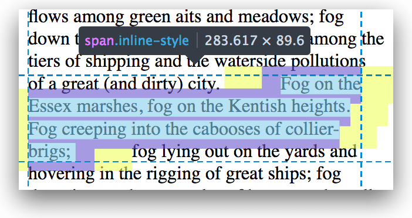
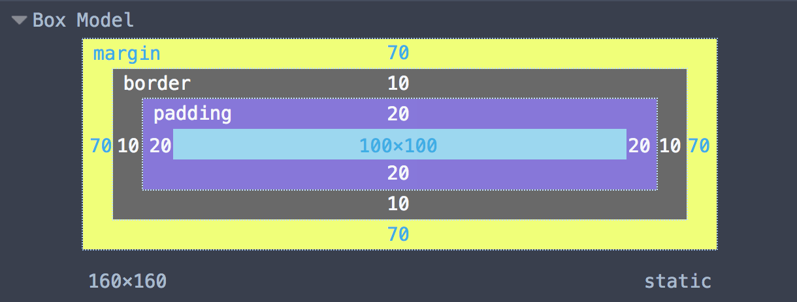
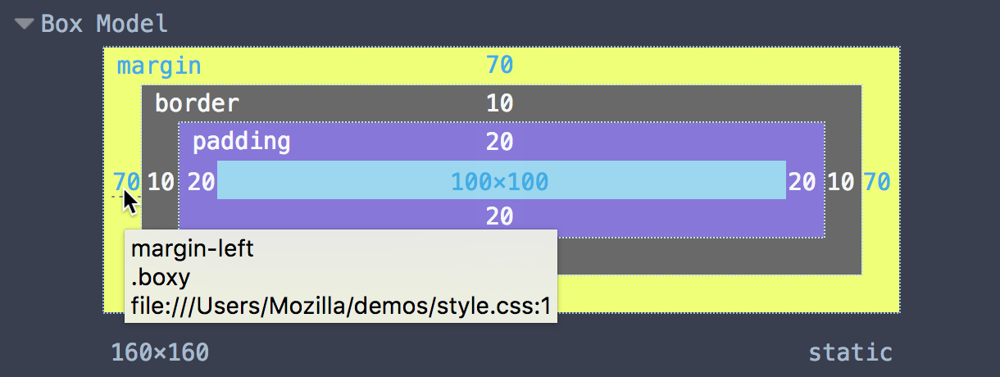

With the Select Element button pressed, if you hover over an element in the page, the box model for the element is shown overlaid on the page:
{{EmbedYouTube("vDRzN-svJHQ")}}
It's also shown overlaid if you hover over an element's markup in the HTML pane:
{{EmbedYouTube("xA4IxTttNLk")}}
If the element is inline and is split over multiple line boxes, the highlighter shows each individual line box that together make up the element:

When an element's selected, you can get a detailed look at the box model in the Box Model view:

If you hover over a value, you'll see a tooltip telling you which rule the value comes from:

If you hover over part of the box model in the Box Model view, the corresponding part of the page is highlighted:
{{EmbedYouTube("H3ZxRbbyfwI")}}
You can also edit the values in the Box Model view, and see the results immediately in the page:
{{EmbedYouTube("gHjDjM8GJ9I")}}